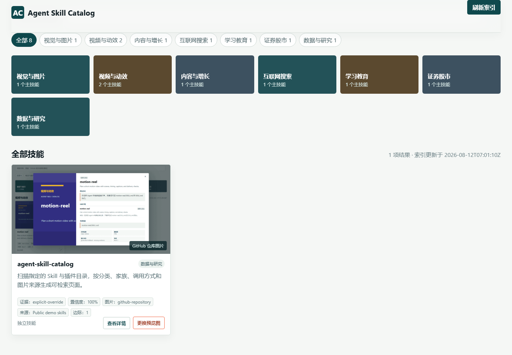
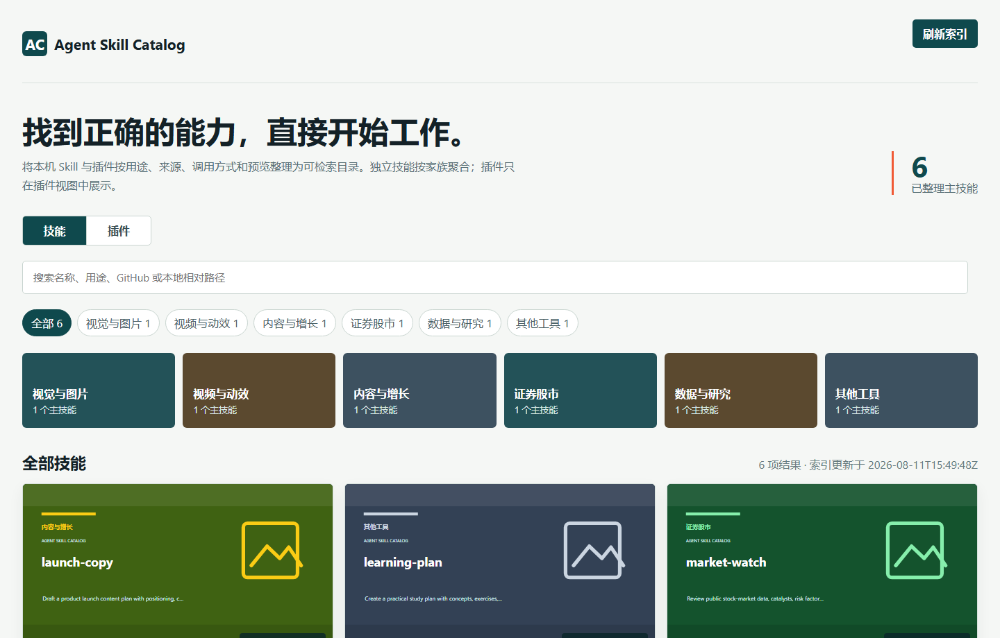
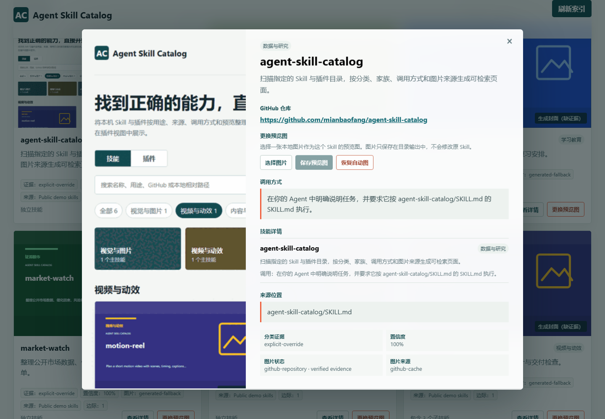

家族保持在一起
真实的主 Skill 和子 Skill 合并成一个家族条目，详情里再展开子项。
安装已发布的 v0.3.4 Skill，再告诉 Agent 要检查哪些本地根目录。
gh skill install mianbaofang/agent-skill-catalog agent-skill-catalog --pin v0.3.4 --agent codex --scope user
为什么需要它
平铺目录很难看出一个 Skill 是独立能力、某个主 Skill 的子项，还是插件携带的能力。目录页把这些关系放到调用前就能检查的位置。
真实的主 Skill 和子 Skill 合并成一个家族条目，详情里再展开子项。
插件提供的 Skill 按服务商和插件归档，不会混进独立 Skill 数量。
分类置信度、调用方式、GitHub 地址、图片来源和缺失证据都保留在详情里。
从文件夹到可用索引
只把需要检查的 Skill 文件夹和插件缓存交给构建器。
对照本地 SKILL.md 和已确认的 GitHub README，保留分类、家族、说明和图片状态的依据。
调用本 Skill 的 Agent 会按批次补齐中文说明，队列完成后才报告目录可用。

详情里有什么
它面向反复查找的日常工作：搜到名称后，先看详情，再决定是否让 Agent 使用。


针对不断增长的 Skill 库
不会。构建器只读取操作者提供的根目录，源文件保持只读；生成的 JSON、缓存预览图和手工换图只写入选定的输出目录。
当配置根目录和包证据足够明确时可以。插件聚合有单独视图，不计入独立 Skill 数量。
优先使用输出目录里的手工覆盖图；否则使用已确认的公开 GitHub 仓库预览、Skill 自带本地图，证据不足时明确显示缺证据状态。
调用本 Skill 的 Agent 会读取有长度限制的本地 SKILL.md 和已确认的 GitHub README 证据，按批次写出自然中文，再通过可续跑的说明队列应用；队列未完成时构建不会报告完成。
用启动时记录的同一批根目录运行本地服务并执行刷新。服务会拒绝替换输入，避免悄悄扫描另一套目录。
文件夹继续留在本地，把用途、调用方式、关系和证据放进一个可搜索的目录。